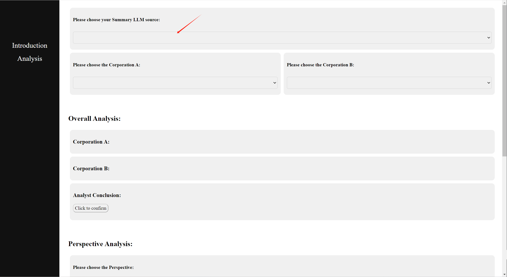
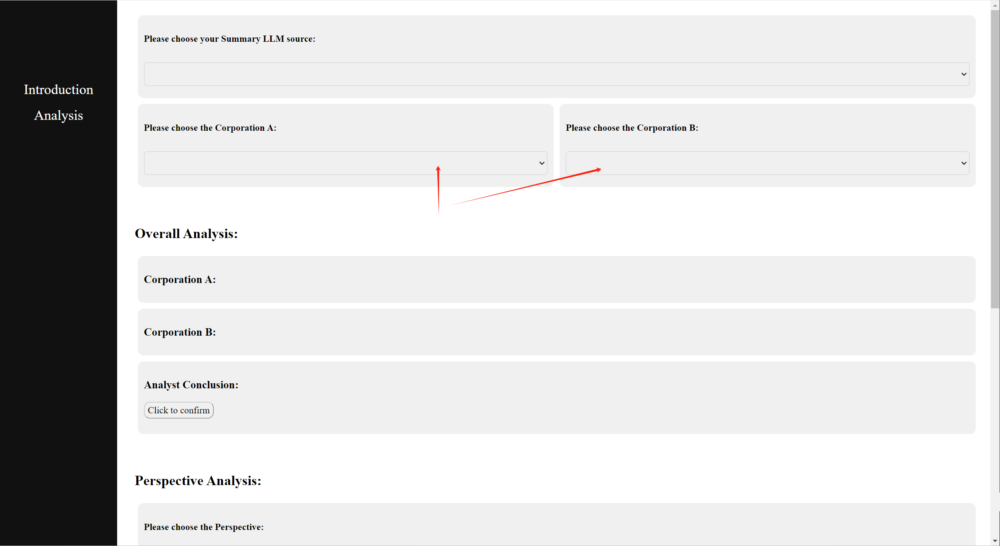
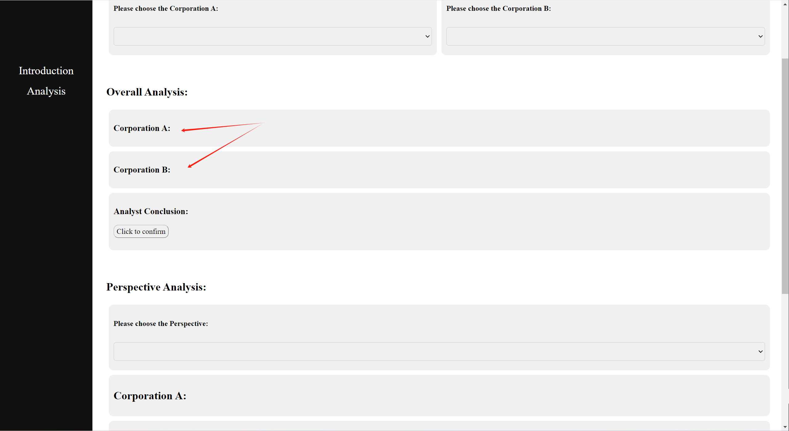
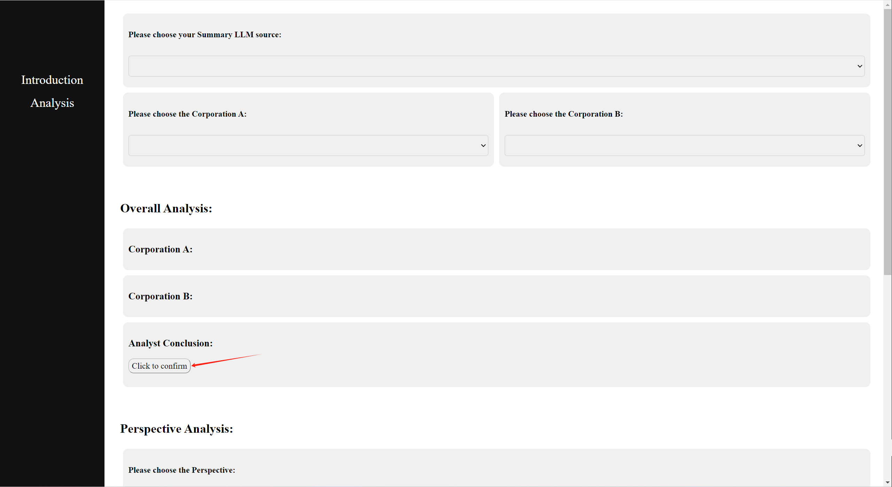
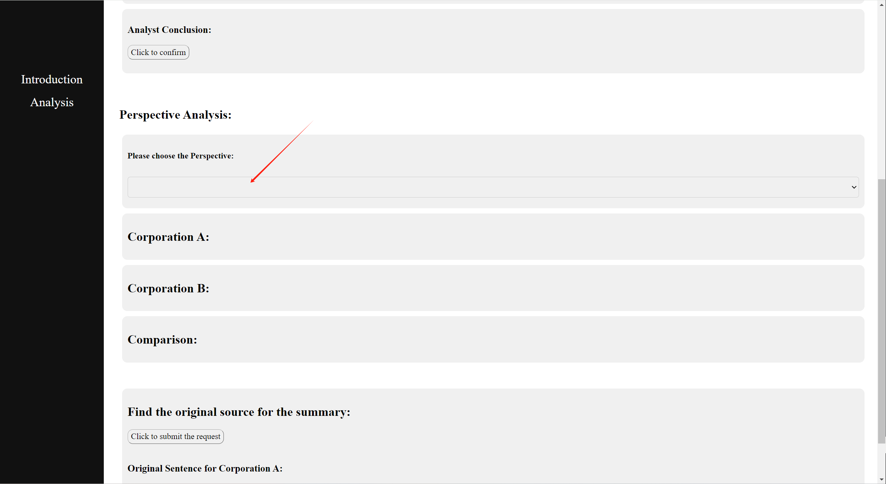
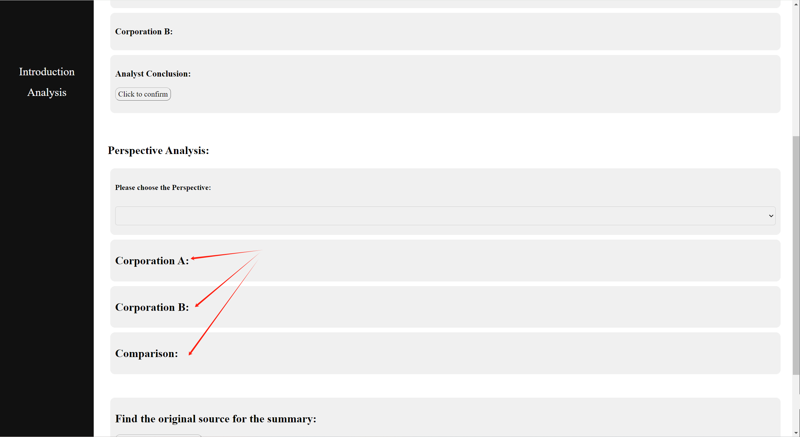
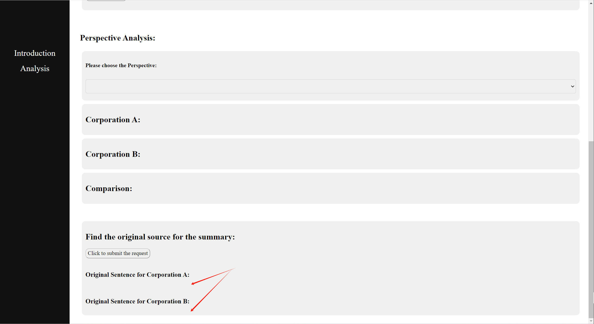

Introduction:
What is 10-K Filing Financial Report Analysis System:
The 10-K Filing Financial Report Analysis System is an advanced AI-powered platform designed to assist users in analyzing and comparing various official 10-K filing-style financial reports. Leveraging the capabilities of ChatGPT's model, currently powered by gpt-3.5-turbo, this system offers a robust and efficient solution for financial analysis.
Key Features:
1. Automated Analysis: The system automatically processes 10-K filings, extracting key financial data, and presenting it in an easy-to-understand format.
2. Comparative Analysis: Users can compare multiple 10-K filings to identify trends, differences, and potential areas of concern or opportunity.
3. Detailed Insights: By utilizing the advanced natural language processing capabilities of ChatGPT, the system provides detailed insights and explanations, helping users understand complex financial data.
4. User-Friendly Interface: The platform is designed with a user-friendly interface that allows users to navigate through financial reports effortlessly, making the analysis process more intuitive.
5. Customization Options: Users can customize their analysis criteria to focus on specific aspects of the financial reports that are most relevant to their needs.
How It Works:
1. Data Input: Users choose 10-K filings and necessary data points into the system.
2. AI-Powered Processing: The system uses gpt-3.5-turbo to process the data, extracting relevant information and performing complex analyses.
3. Report Generation: The system generates comprehensive reports that highlight key financial metrics, trends, and comparisons.
4. Interactive Analysis: Users can interact with the generated reports, drilling down into specific sections for more detailed information.
5. Continuous Learning: The AI model continuously learns from user interactions and feedback, improving the accuracy and relevance of the analyses over time.
Benefits:
1. Time-Saving: Automating the analysis of 10-K filings saves significant time compared to manual analysis.
2. Accuracy: The advanced AI algorithms ensure high accuracy in data extraction and analysis.
3. Accessibility: The system makes complex financial data accessible to users with varying levels of financial expertise.
4. Scalability: The platform can handle a large volume of filings, making it suitable for both individual analysts and large financial institutions.
How to use the system:
After clicking the 'analysis' hyperlink to get there, you can see the whole page with all kinds of functions to analyze the financial reports.
Before starting to use the system, you need to choose a analysis source which will help you to deal with the functions later on.
Then you can start choosing the corporations here. The corporations are represented by their stock codes.
For the detailed reference about the stock codes, you can go to this page to learn more:
Corporation ReferenceAfter choosing either one of the corporation, you need to wait for the output below. You cannot choose the other one until the output come out.
When you get both the summary outputs, you can click the button below to submit the request for a comparison analysis.
Then you can choose to deal with one specific perspective to see what's the difference.
You can just choose from the perspective box and wait for the output below.
Besides analysis by perspectives, you can also submit the following request to see the original sentences for the summarization
